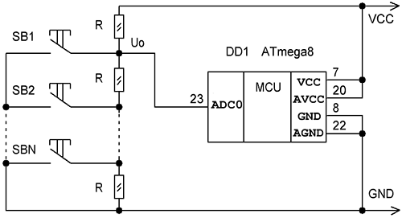

Схема кнопочного ввода выглядит следующим образом:

Рис.1 Опрос кнопок с помощью АЦП
Если в микроконтроллере имеется АЦП, то его также можно использовать для опроса кнопок. Схема подключения показана на рис.1. Как видим для группы кнопок SB1…SBN такой интерфейс потребует всего одной аналоговой линии. Нажатие кнопки определяется по изменению напряжения U0. Если для простоты все сопротивления R делителя напряжения выбрать одинакового номинала, то номер нажатой кнопки N, будет связан с U0 следующим образом:
U0 = ((N-1)/N)*VCC, N = VCC/(VCC- U0),
где VCC – напряжение питания.
Если в качестве опорного напряжения VREF выбрать напряжения питания VCC, то получим
N = 0x3FF/(0x3FF – ADCH:ADCL),
где ADCH:ADCL – регистр с 10-разрядным результатом измерения U0.
Для опроса кнопок вполне достаточно 8-разрядной точности измерения U0. Поэтому можно спокойно отбросит 2 младших разряда и работать с однобайтовыми числами. Конечная формула при этом станет ещё проще:
N = 0xFF /(0xFF – ADCH)
Старший байт результата окажется в регистре ADCH если в настройках АЦП включён режим выравнивания по левому краю. При этом 8 старших битов результата заносятся в ADCH, а 2 младших, которые в данном случае будут отброшены, в 6-й и 7-й разряды ADCL.
Подпрограмма опроса кнопок:
|
1 2 3 4 5 6 7 8 9 10 11 12 13 14 15 16 17 18 19 20 21 22 23 24 25 26 27 28 29 30 31 32 33 34 35 36 37 38 39 40 41 42 43 44 45 46 47 48 49 50 51 52 53 54 55 56 57 58 59 60 61 62 63 64 65 66 67 68 69 70 71 72 73 74 75 76 77 78 79 80 81 82 |
.def temp = R16 ;регистр для промежуточных операций .def button = R18 ;регистр с кодом нажатой кнопки
ldi temp,high(RAMEND) ;инициализация стека out SPH,temp ldi temp,low(RAMEND) out SPL,temp
; В начале инициализации АЦП необходимо произвести включение ; и установку его тактовой частоты. Включение производится ; установкой бита ADEN в регистре ADCSR. Тактовая частота поступает ; на АЦП от системного генератора через предделитель, коэффициент ; деление которого определяется битами ADPS2:ADPS0 в ADCSR и лежит ; в пределах 2…128. Максимальная точность преобразования ; достигается при частоте 50…200 кГц. Если, допустим, ; микроконтроллер работает от внутреннего генератора 1МГц, ; то необходимо установить коэффициент предделителя 8 (биты ; ADPS2:ADPS0 = 011). Тогда получим приемлемую частоту ; 1000000/8 = 125 кГц как раз из этого диапазона.
ldi temp,(1 << ADEN)|(1 << ADPS1)|(1 << ADPS0) out ADCSR,temp
; На следующем этапе производится выбор аналогового входа ; к которому будет подключён АЦП. Он задаётся битами MUX3:MUX0 в ; регистре ADMUX. В нашего случая(используется вход ADC0) все 4 ; бита должны быть сброшены. Кроме этого необходимо выбрать ; источник опорного напряжения (задаётся битами REFS1, REFS0 ; в ADMUX) и режим выравнивания результата (отвечает бит ADLAR в ; ADMUX). Для данной схемы в качестве опорного используется ; напряжение питания, а результат измерения выравнивается по левому ; краю(необходимо установить REFS0 и ADLAR).
ldi temp,(1 << ADLAR)|(1 << REFS0) out ADMUX,temp
; Теперь необходимо запустить преобразование, установив бит ; ADSC в управляющем регистре ADCSR, и дождавшись его завершения ; вызвать подпрограмму опроса кнопок. О завершении преобразования ; свидетельствует установка флага ADIF в ADCSR (если кроме этого ; будут установлены ещё биты ADIE в ADCSR и I в SREG, то произойдёт ; переход на обработчик прерывания от АЦП), после чего флаг ; необходимо сбросить любой командой, записывающей в него 1. Для ; того чтобы избежать процедуры постоянного запуска преобразования ; и дальнейшего цикла ожидания установки ADIF, можно использовать ; режим непрерывного преобразования установкой бита ADFR в регистре ; ADCSR. В этом случае следующее измерение будет запускаться ; автоматически после завершения предыдущего. Конечно, это возможно ; только если в ходе программы в режим работы АЦП небыли внесены ; изменения. . sbi ADCSR,ADSC cnv: sbis ADCSR,ADIF rjmp cnv sbi ADCSR,ADIF rcall btn_adc .
; Подпрограмма опроса кнопок с помощью АЦП ; R18 – номер нажатой кнопки при выходе из подпрограммы, ; если ни одна кнопка не нажата, то R18=0 ; R16,R17 – регистры для промежуточных операций ; BUTTON – число кнопок
btn_adc: in R16,ADCH ;получаем результат преобразования и ldi R17,0xFF ;находим разность R17 = 0xFF–ADCH sub R17,R16 ldi R16,0xFF ;заносим в R16 0xFF clr R18 ;очищаем R18 ba1: sub R16,R17 ;производим деление 0xFF/(0xFF–ADCH), inc R18 ;с помощью последовательного вычитания brcc ba1 ;R16 = R16-R17 = 0xFF -(0xFF–ADCH) add R16,R17 ;учитываем остаток после деления lsl R16 ;если он меньше половины делителя, sub R16,R17 ;то отбрасываем его brcc ba2 dec R18 ba2: cpi R18,BUTTON+1 ;сравниваем номер нажатой кнопки R18 brcs ba3 ;с числом кнопок BUTTON+1 и если R18 > BUTTON+1, clr R18 ;то ни одна кнопка не была нажата и R18=0 ba3: ret |
При таком подключении лучше всего использовать 2-8 кнопок, а для увеличения их количества можно задействовать другие аналоговые линии. Платой за простоту является невозможность распознания комбинаций клавиш. При нажатии двух или более кнопок всегда будет считана та, которая на схеме имеет меньший номер. Кнопка SB1 будет всегда иметь наивысший приоритет. В некоторых приложениях эта особенность может быть даже преимуществом, когда, например, необходимо выдать сигнал отключения независимо от остальных команд, приходящих с клавиатуры.